currently interested in robotics, AR/VR, computer vision, and anything else that challenges me.
experience
Engineering Student
2025 - 2030First year student planning to enter mechanical engineering with a specialization in mechatronics.
Drive Train Member
Sept 2025 - PresentWe design and build human-powered submarines to compete in international races. I help make the thing move.
Film & Television Actor
2015 - 2025 (on pause)Professional acting career spanning productions by Netflix, Disney, CBC, and more since 2015.
projects (hover to see preview | click to see details)
SUBC Submarine Drivetrain
Designed, manufactured, and optimized the human-powered drivetrain for our competition submarine.
Autonomous Robotic Claw
Arduino-based robotic claw that detects and grips objects using ultrasonic sensing and servo actuation.
Wedoo - nwHacks 26'
Collaborative to-do and habit tracking app built in 24 hours during nwHacks (largest collegiate hackathon in Western Canada)
Python Intership Scraper
Python-based scraper that collects internships from Greenhouse & Lever APIs and displays filtered results in Streamlit.
This Website
(You don't get to click this one. Just look through the site.)
random facts
skills
Mechanical Design
Analysis & Programming
Manufacturing
get in touch
want to talk about new ideas, engineering, sports, or literally anything else? hit me up!
 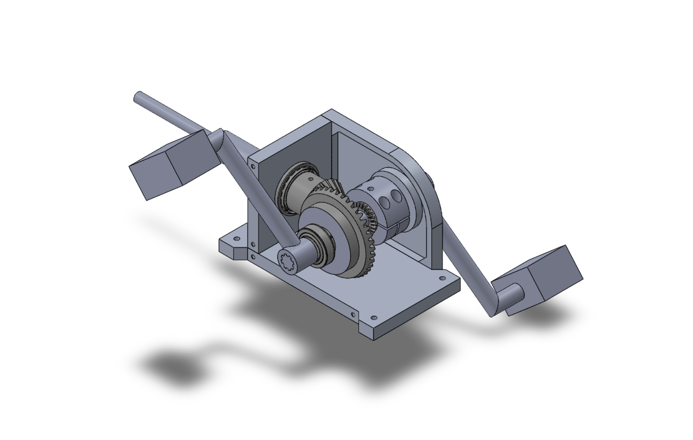
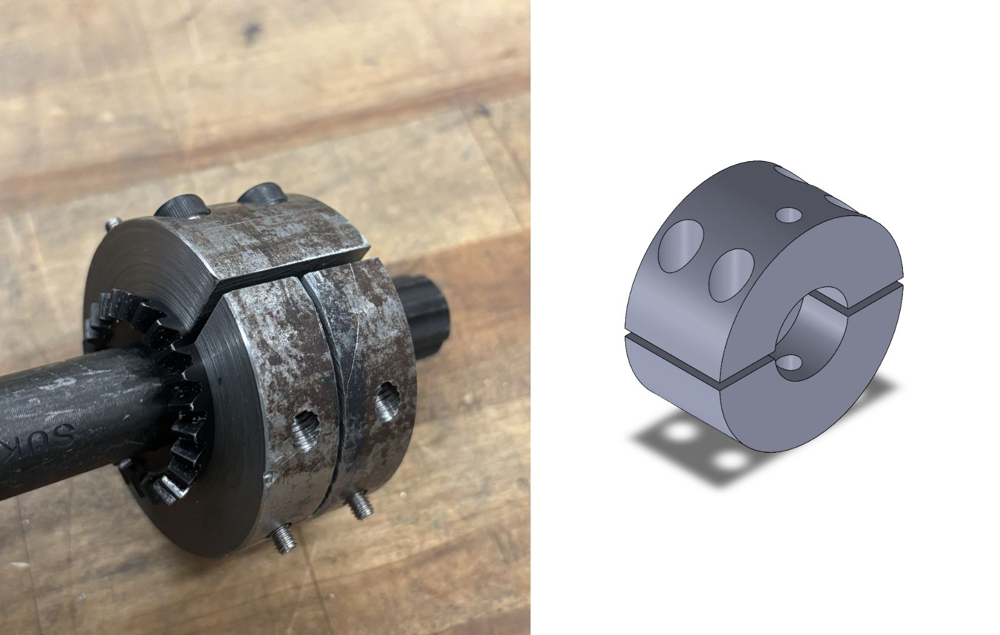
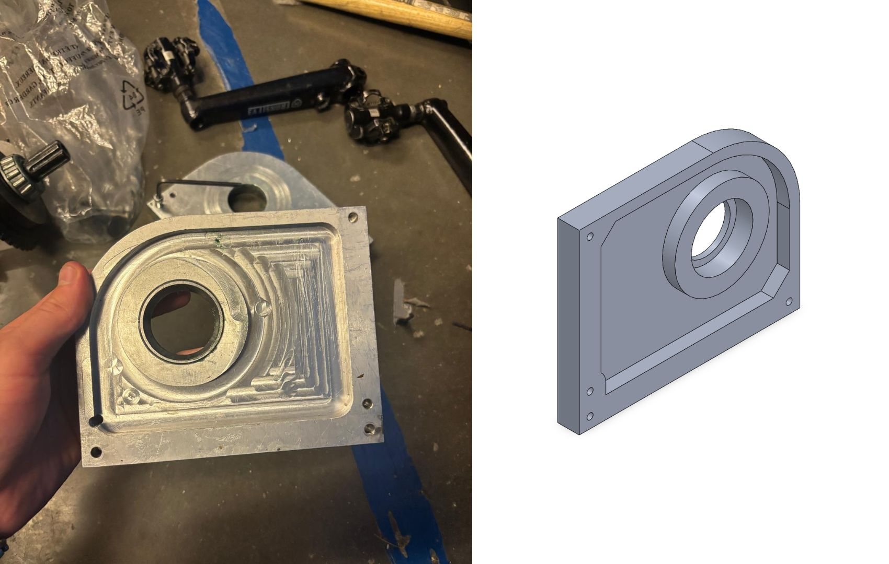
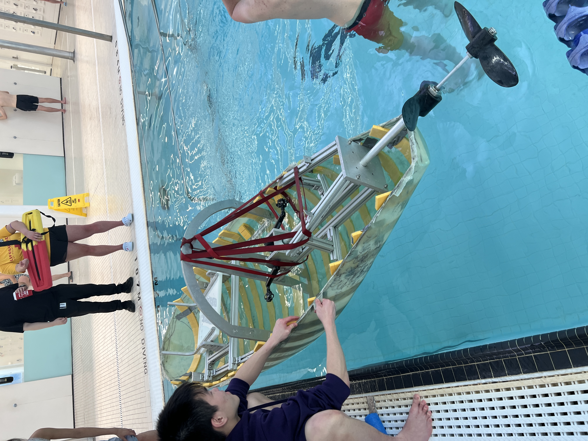
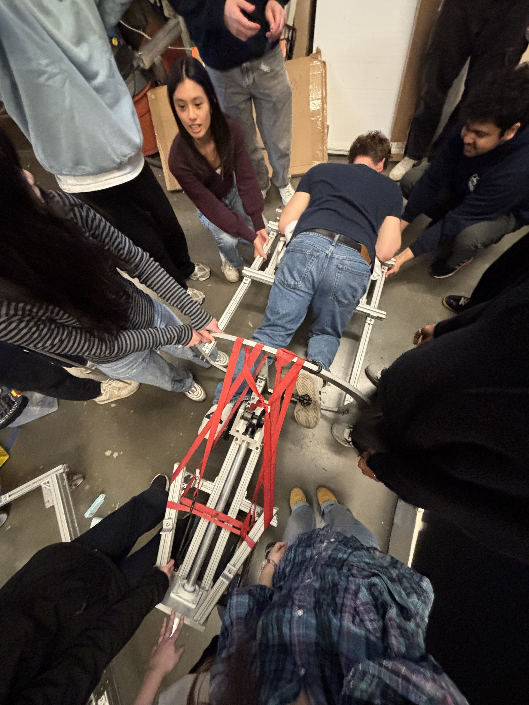
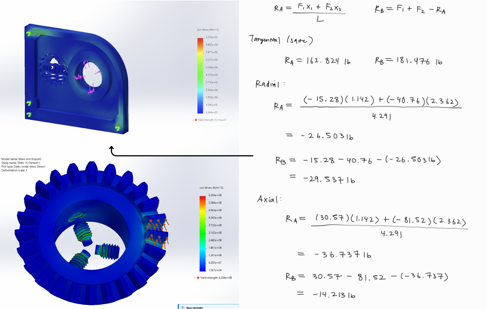
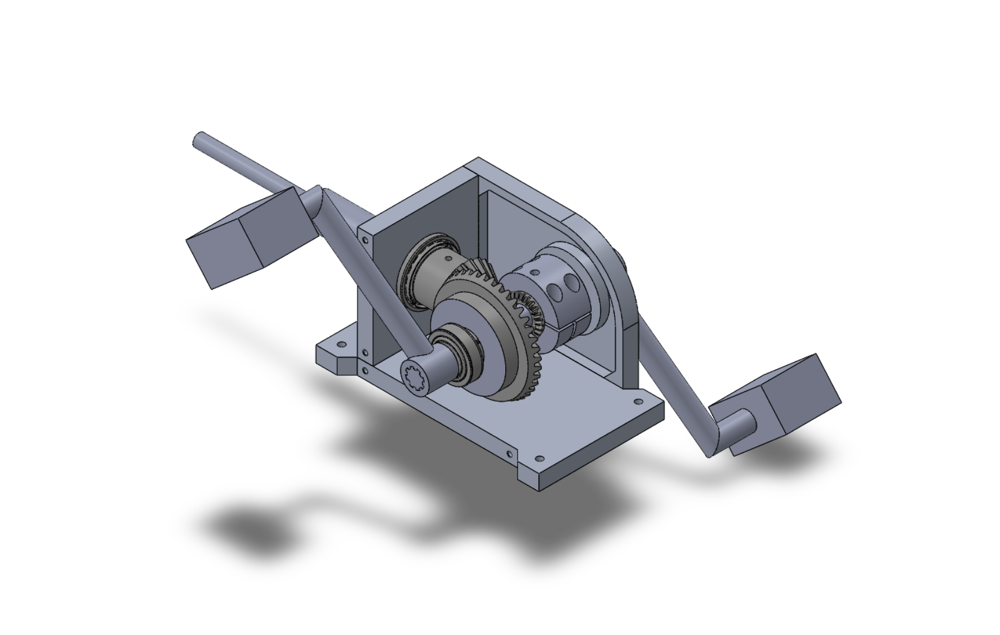
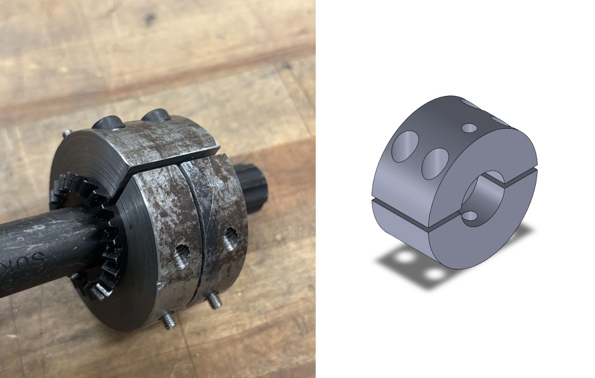
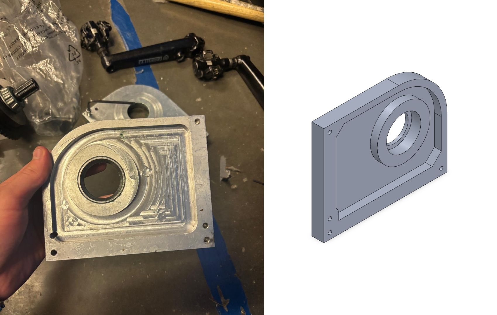
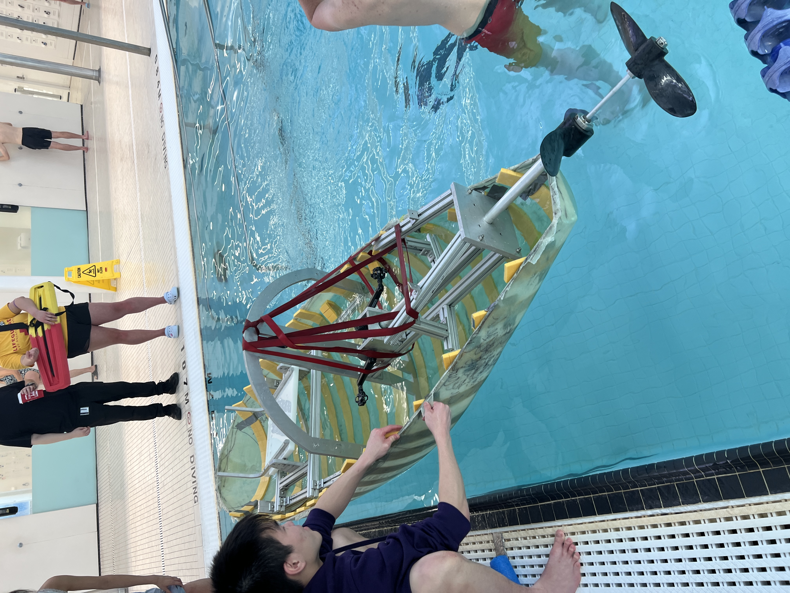
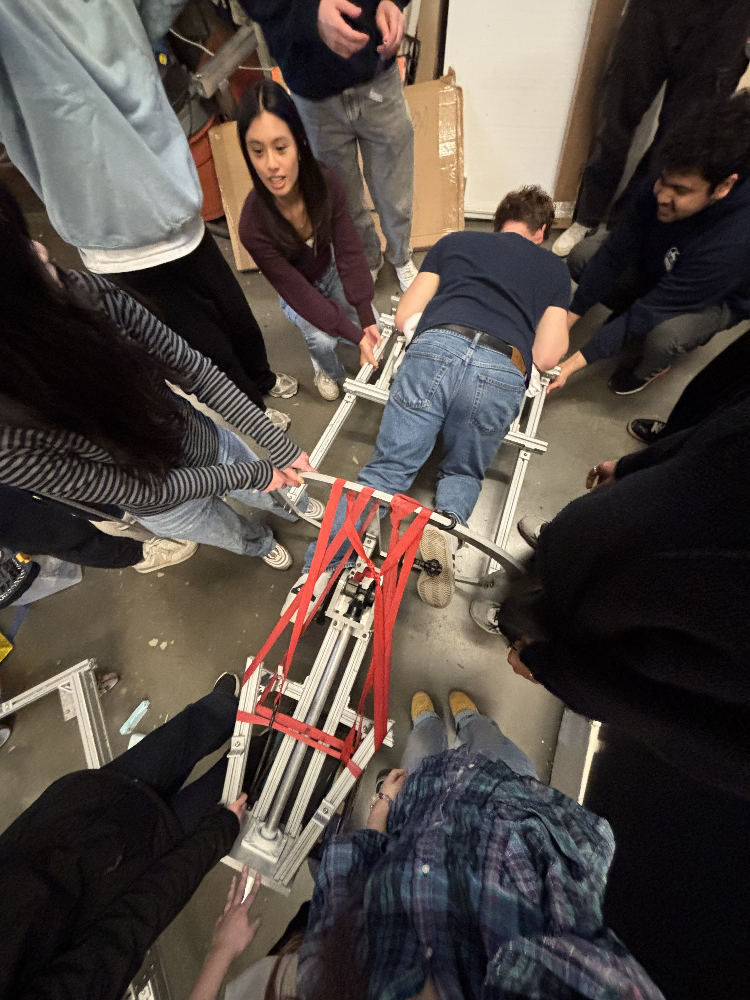
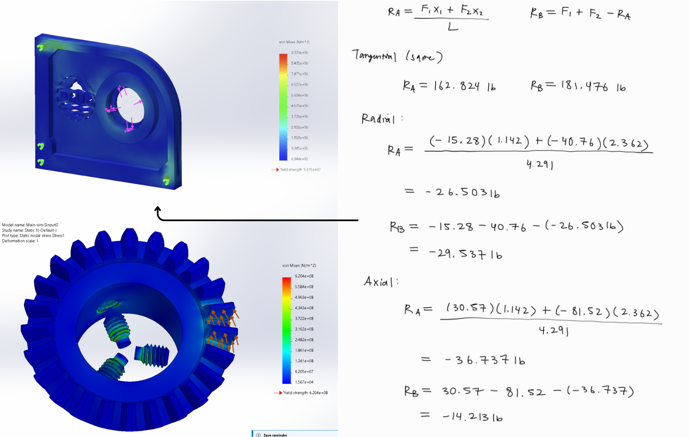